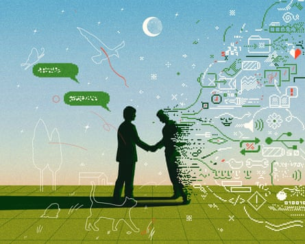

Hello, and welcome to TechScape. This week in tech news, Elon Musk and Donald Trump are back at it, warring over the passage of the president’s sweeping tax bill and the Tesla CEO’s threat to create a third political party. Whether the richest person in the world is successful in those efforts will largely depend on the recruitment of another star politician. In other news, we want to know if you use generative artificial intelligence to write your personal messages – in what circumstances, and how often? Email tech.editorial@theguardian.com to let us know.
Elon Musk needs another Donald Trump
Elon Musk and Donald Trump have reignited their feud after the passage of the president’s sweeping tax bill on 3 July. Musk has been campaigning (tweeting) against the “abomination” of legislation for weeks, which passed in spite of him. Division over the bill was the cause of their initial breakup in early June.
Musk has threatened to start a new centrist political party, and over the weekend, he made signs that he would follow through on his ultimatums to create “The America Party”. Trump responded with a lengthy post on Truth Social calling Musk a “TRAIN WRECK” that had gone “off the rails” and saying that third parties had never succeeded in the US, so Musk’s idea was “ridiculous”. Tesla’s share price fell sharply in response to the news.
What would Musk’s America party do besides troll Democrats and Republicans ? Likely try to primary Republicans who voted for the bill.
From my colleague Ramon Antonio Vargas:
The new party that Elon Musk has boasted about bankrolling could initially focus on a handful of attainable House and Senate seats while striving to be the decisive vote on major issues amid the thin margins in Congress . Musk tweeted that one way to achieve his political goals would be to “laser-focus on just 2 or 3 Senate seats and 8 to 10 House districts ”.
Would Musk himself become a candidate? Unlikely. He has promised to return his focus to his many companies, though his most recent tweets indicate otherwise. What Musk needs to make his part a reality is another Donald Trump, a superstar aligned with him whom he can douse with money.
His function in politics is that of an ATM
The Wisconsin supreme court election in early April demonstrated that Musk himself is not personally popular. After appearing on stage and handing out million-dollar checks, he watched his preferred candidate lose handily. His function in politics is that of an ATM. He is, after all, the richest person in the world, even though Tesla’s market capitalization has taken a beating since he appeared in Washington.
Since Musk himself is an ineffective electioneer, the success of his new political party will depend on an undeniable star like Trump, another titanic force. He needs a conduit who can channel his donations into a charming and effective campaign.
So far, there doesn’t seem to be one. Trump’s grip on the Republican party is tight, and he runs an operation that enacts swift and pitiless retribution on anyone who expresses enough disloyalty, including Musk. The risk of defecting from Trump’s party and joining Musk’s quixotic centrist quest is high. The only people who do want to see a new party form are the chaos-hungry voters on X, who told Musk by a considerable margin in a poll last week he ran that he should do it. Few of them, if any, are running for office, though. I suspect they just want the most fractious outcome, which may become our collective fate.
A moment of odd and coincidental timing: Sam Altman , CEO of OpenAI, picked this weekend to say that he feels “politically homeless”. Musk has given the same assessment of his own political position. These two Silicon Valley heavyweights hate each other, an acrimony evident in Musk’s lengthy legal fight to stop OpenAI’s planned conversion from a non-profit to a for-profit enterprise. Despite their enmity, though, they voiced this same idea at the same time.
Musk and Altman have cultivated starkly different public personae. Where Musk is loud online, Altman is reserved. Where Musk is brash, Altman is calculated. Where Musk has swerved to the political right, Altman has attempted to play both sides of the aisle. But Altman’s sentiments, concurrent and concurring with Musk’s, perhaps offer an explanation for how these two could have worked together to found OpenAI together in 2015. After all, if their stock portfolios are any indication they both believe in “the compounding magic of capitalism”, as Altman put it.
Do you use AI to write your texts?
Illustration: Raven Jiang/The Guardian
Last week, we published a story about people who use generative artificial intelligence to write their personal messages. AI is proliferating in offices with promises of productivity gains. As we grow more comfortable with it at work, though, it’s also seeping into our personal lives.
My colleague Adrienne Matei reports:
Earlier this spring, Nik Vassev heard a high school friend’s mother had died. Vassev, a 32-year-old tech entrepreneur in Vancouver, Canada, opened up Claude AI, Anthropic’s artificial intelligence chatbot.
Claude helped Vassev craft a note. Thanks to the message, Vassev’s friend opened up about their grief. But Vassev never revealed that AI was involved. People “devalue” writing that is AI-assisted, he acknowledges.
In one 2023 study, 208 adults received a “thoughtful” note from a friend; those who were told the note was written with AI felt less satisfied and “more uncertain about where they stand” with the friend, according to the authors.
Using AI in personal messages is a double gamble: first, that the recipient won’t notice, and second, that they won’t mind. Still, there are arguments for why taking the risk is worthwhile, and why a hint of AI in a Hinge message might not be so bad.
Read the whole story here .
We now have the capability to punch up any message – a more descriptive word here, a more heartfelt tone there – with a snap of a finger. Can AI help us better convey what we mean, eliminating the frustrating barrier of writing that stands between feeling and expression? Or will it desiccate our relationships if we do not force ourselves through the emotions of writing our messages ourselves? Will AI help us connect or allow us to feign connection without putting in the work?
Both the benefits and drawbacks are evident, and some scenarios seem more appropriate than others. Perhaps you would not have sent a birthday card at all if you had not had a personalized message at the ready. One writer for the Atlantic was astounded when Google’s Gemini, which has access to her personal conversations, wrote a sweet and specific birthday card that referenced real moments in her relationship with a good friend. Perhaps you would have ghosted someone without a mechanized speechwriter. The context in which you decide you will use AI to write – or when you disclose that you already have – will make all the difference in its reception.
We want to hear more. AI is influencing our private moments and our intimate connections as well as our professional lives, and we want to know what situations you find it best suited to.
*** Do you use generative AI to write your personal communications?
If you do, email us at tech.editorial@theguardian.com and tell us how and how often. Has it improved your relationships with others or made them more difficult?
The wider TechScape
- ‘The vehicle suddenly accelerated with our baby in it’: the terrifying truth about why Tesla’s cars keep crashing
- Elon Musk’s xAI gets permit for methane gas generators
- Jury says Google must pay California Android smartphone users $314.6m
- Trump to start TikTok sale talks with China, he says, with deal ‘pretty much’ reached
- Trump officials create searchable national citizenship database
- ‘AI doesn’t know what an orgasm sounds like’: audiobook actors grapple with the rise of robot narrators
- Wimbledon chiefs defend AI use as Jack Draper says line calls not ‘100% accurate’
- Google undercounts its carbon emissions, report finds
- ‘A billion people backing you’: China transfixed as Musk turns against Trump
- Trump and Musk’s feud blows up again with threats of Doge and deportation